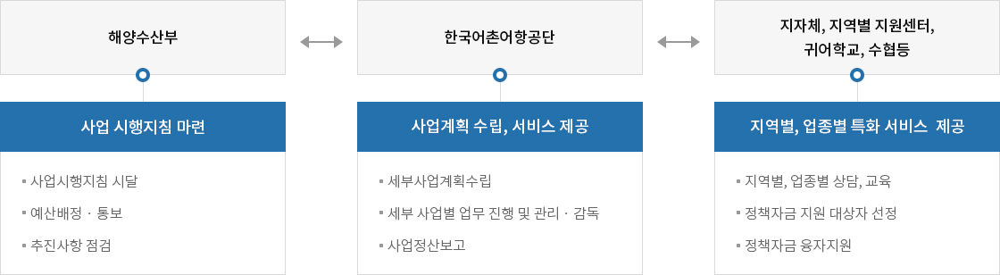
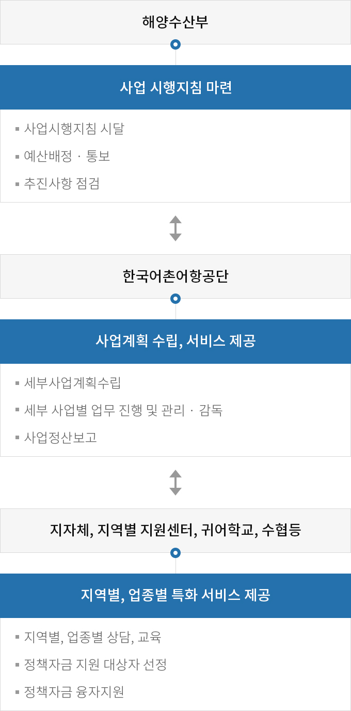

귀어귀촌 활성화
- 홈
- 사업소개
- 활력있는 어촌
- 귀어귀촌 활성화
추진계획
- 귀어‧귀촌 희망자들에게 단계별(동기부여→준비→정착) 맞춤형 전문 서비스 지원으로 가시적인 귀어‧귀촌인 확대 실현
- 귀어‧귀촌 교육, 상담 등 접근편의성 증대로 젊은층 귀어‧귀촌 활성화 도모
- 귀어‧귀촌인 대상 경영 컨설팅 운영으로 어업소득 증대 및 안정적 정착여건 마련 등 성공적인 귀어귀촌 저변 확대
추진체계


-
해양수산부 - 사업 시행지침 마련
- 사업시행지침 시달
- 예산배정 · 통보
- 추진사항 점검
-
한국어촌어항공단 - 사업계획 수립, 서비스 제공
- 세부사업계획수립
- 세부 사업별 업무 진행 및 관리 · 감독
- 사업정산보고
-
지자체, 지역별 지원센터, 귀어학교, 수협등 - 지역별, 업종별 특화 서비스 제공
- 지역별, 업종별 상담, 교육
- 정책자금 지원 대상자 선정
- 정책자금 융자지원